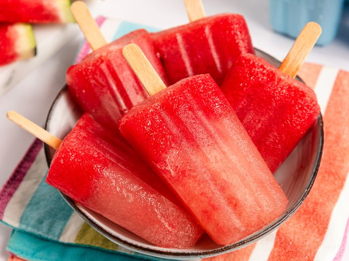

Watermelon Pops

Description
These refreshing watermelon popsicles are easy to make by blending seedless watermelon with honey. Freeze in your favorite popsicle molds for a cool and fruity summertime treat!
Ingredients
- 3/2 cups seedless watermelon, diced
- 1/2 cup water
- 1 tablespoon honey
- 1 tablespoon fresh lemon juice
- 1 tablespoon white sugar or to taste
Steps
- Gather all ingredients.
- Blend watermelon, water, honey, lemon juice, and sugar together in a blender until smooth.
- Pour mixture into popsicle molds and freeze until solid, about 2 hours.
- Run hot water over popsicle molds for a few seconds to unmold.
Home